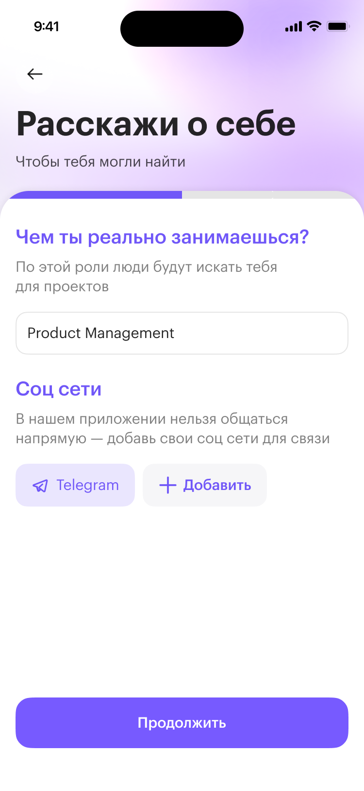
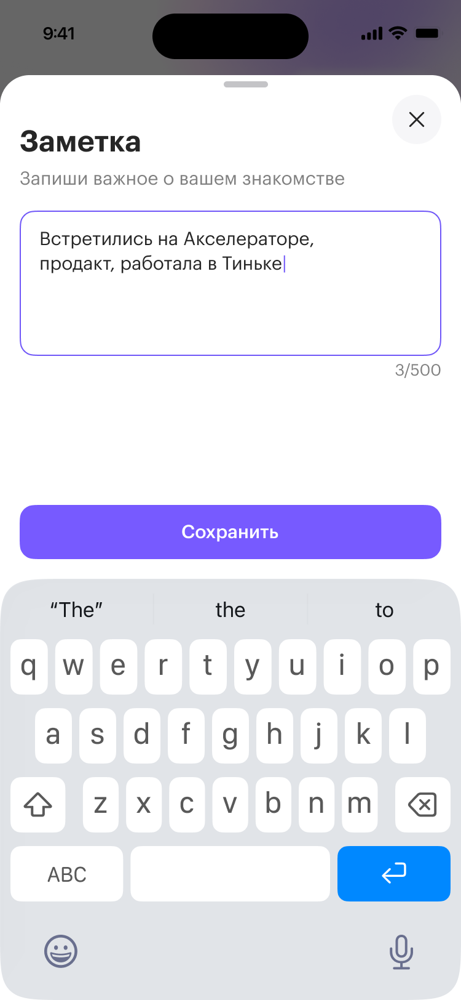
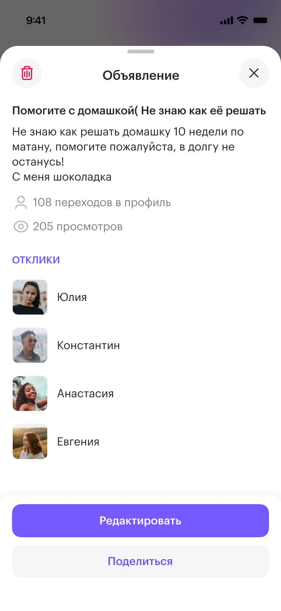
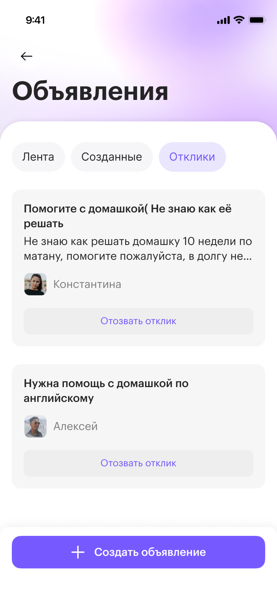

Нити
Мобильное приложение для нетворкинга студентов
Студенты постоянно пересекаются с интересными людьми — на парах, ивентах, хакатонах, — но связи гаснут: контактами не обменялись или обменялись и не написали. А когда нужен человек в проект, искать его негде: в общих чатах шумно, в мессенджерах — только те, кого уже знаешь.
Спроектировать приложение, которое помогает сохранять живые знакомства и находить людей под проекты — и при этом не превратиться в ещё один мессенджер.
Исследовали проблему и провели серию глубинных интервью — на их основе собирали функционал, а не наоборот. Ключевое решение по итогам: осознанно отказались от внутренней переписки. Общение уходит либо в реальную жизнь, либо во внешние мессенджеры, а приложение остаётся точкой пересечения.
В работе с 2025. Функционал выведен из интервью; продуктовая логика собрана и держится на одном принципе. Проработала концепцию и спроектировала почти всё приложение — от структуры до экранов. Метрик пока нет.

Внутри приложения нельзя переписываться, человека находят только по заполненному профилю — поэтому собрать информацию о нём нужно сразу на входе, иначе он останется невидимым.
Короткий пошаговый онбординг, который собирает профиль по частям и объясняет, зачем каждое поле.

После вечера знакомств лица и имена сливаются, и через неделю непонятно, кто есть кто, — если дать записать контекст сразу при добавлении, контакт не потеряет смысл.
Возможность оставить короткую заметку прямо в момент знакомства — где пересеклись, о чём говорили, зачем может пригодиться.


Студентам нужен простой способ попросить о помощи или найти участников для проекта, не обращаясь к каждому лично.
Раздел объявлений, где можно создавать запросы и откликаться на чужие. Добавила отдельные сценарии для авторов и откликнувшихся: просмотр чужих объявлений, управление своими, список собственных откликов.